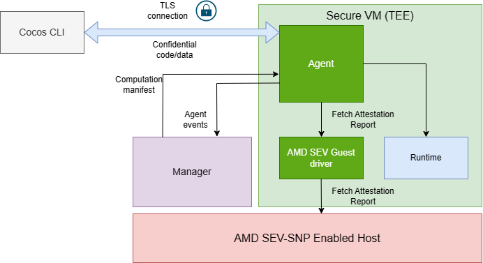

Agent#
The agent is responsible for the life cycle of the computation, i.e., running the computation and sending events about the status of the computation within the TEE. The agent is found inside the VM (TEE), and each computation within the TEE has its own agent. When a computation run request is sent from the manager, manager creates a VM where the agent is found and sends the computation manifest to the agent.
The picture below shows where the agent runs in the Cocos system, helping us better understand its role.

StateMachine#
- Orchestrates the overall flow of the computation.
- Transitions between states based on received events.
- Defines valid state transitions and associated functions.
States#
idle: Initial state, waiting for the computation to start.receivingManifest: Receives the initial computation manifest.receivingAlgorithm: Receives the algorithm for the computation.receivingData: Receives dataset data for the computation.running: Executes the computation using received algorithms and data.resultsReady: Computation has finished, results are available.complete: All results have been consumed, computation lifecycle ends.
Events#
start: Triggers the computation startup process.manifestReceived: Indicates computation manifest has been received.algorithmReceived: Indicates the algorithm has been received.dataReceived: Indicates all dataset data has been received.runComplete: Signals the completion of the computation execution.resultsConsumed: Indicates all consumers have retrieved the results.
Agent Events#
As the computation in the agent undergoes different operations, it sends events to the manager so that the user can monitor the computation from either the UI or other client. Events sent to the manager are based on the agent state as defined by the statemachine.
Vsock Connection Between Agent & Manager#
Agent sends agent events and logs to the manager via vsock. The manager listens to the vsock and forwards the events via gRPC. The agent events and logs are used to show the status of the computation inside the TEE so that a user can be aware of what is happening inside the TEE.
Attestation#
The agent can fetch the attestation report from the host using the AMD SEV guest driver. The attestation report proves that the agent is running inside the secure virtual machine (SVM) and that the SVM is running the expected code on the expected hardware and is configured correctly.
Algorithm and dataset validation#
Before execution, algorithms and datasets are validated against the computation manifest to ensure integrity and compatibility. This includes the sha3 256 hash of the dataset and algorithm, which are validated against the value set in the manifest. The algorithm and dataset provider ID are also validated against the manifest during the uploading of the dataset and algorithm.
Supported Algorithm types#
There are four supported algorithm types, binaries, python files, docker images and wasm modules. The default algorithm type is binaries, which is uploaded to agent using CLI. Instructions on how to provide a python file are provided in CLI. More information on how to run the other types of algorithms can be found here.